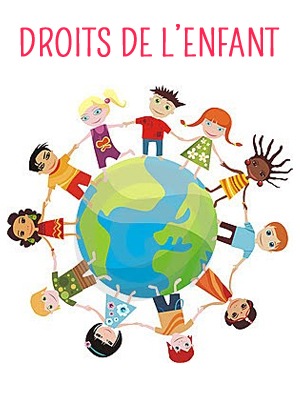

It skills :
Python
Javascript
Angular
Latex
Git / Github
HTML CSS
SQL
Linux
Transversal skills :
Organisation
customer relation
needs analyses
Team-word
Communication
interdisciplinarity
initiative
Logical skills
Quality :
Rigourous
good relationship
Logical skill
inquisitive

Professionnal experiences
Social Worker in much centre of child protection
Ile de France, Rhône Alpe, Loire Atlantique
Teamwork
Project management ( holidays, partnership creation)
Group management
Listening and communication with partners ( parents, socials services, associations )
Analysis and answers to various problemss
Participation in working groups ( Internal Analysis, Service Improvement, Audits )
Organisational methodologies (crisis management, emergency management and problem anticipation)